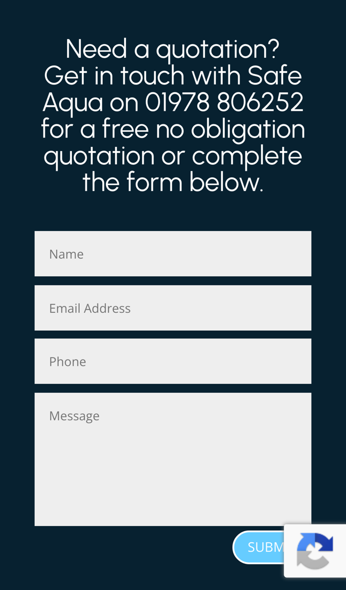

Safe Aqua: quicker quotes and more repeat work
I went through your website on a phone, the way a facilities manager or a landlord looking for legionella help would, and read your homepage, risk assessment, monitoring, TMV servicing, about and contact pages. It explains clearly what each service involves and why it matters. Where I think you'd save time, and keep more of the yearly work, is what happens after someone asks for a quotation.
What's already working
Three things I'd change
Ask the right questions to price faster
Your pages say "Get in touch with Safe Aqua on 01978 806252 for a free no obligation quotation or complete the form below." The form asks only for a name, email address, phone and message.

A message on its own rarely says what kind of building it is or how big the water system is. So most quotes can't go out until you've rung or emailed back to ask.
- The form asks which service they need, the type of building, and a few simple counts such as tanks, showers and TMVs.
- From your own prices it shows a guide figure straight away, and says when the full quotation will follow.
- You get the enquiry complete and ready to price, with no first call needed just to ask questions.
Remind clients when work is due again
Your TMV page says TMVs must be "checked at least annually", and your risk assessment "provides a schedule for on-going monitoring". Nothing on the site reminds a client when their next visit is due.
Most of this work comes round every year. A reminder at the right time means the client books you again, rather than searching for someone new or letting it slip.
- When a job is done, the date the next one is due is saved against the client and the site.
- A few weeks before, they get a short message with a link to pick a date for your engineer.
- Each month you see whose work is due, who has booked and who needs a call.
Turn report actions into booked work
Your monitoring page says your engineers carry out audits "before issuing a report with a list of any actions that it may be necessary for you to take", and you offer remedial works as part of a "one stop shop".
The actions on a report are work you can do, but a busy site manager can easily file the report and forget it. Each one left open is a job you could have quoted for.
- The report goes out as a link, with each action listed and a box to ask you for a quote.
- Ticked actions come to you as quote requests, and the quote goes back as a link they can accept.
- Open actions get a gentle reminder before the next visit, so nothing sits on file for a year.
Your website, answering for you
An assistant that answers the questions you get asked again and again, at any hour. These answers come only from your own website: your homepage, monitoring and TMV servicing pages.
Anything it can't answer, it passes to you with the customer's details.
What happens next
For five local businesses I'm setting up one of these for free, in return for an honest review. Pick whichever would help most.
I'm Tom Williams and I run Tomoni-AI. If a 20-minute chat would help, reply to my email or give me a ring.
Call 07971 512158Email Tom